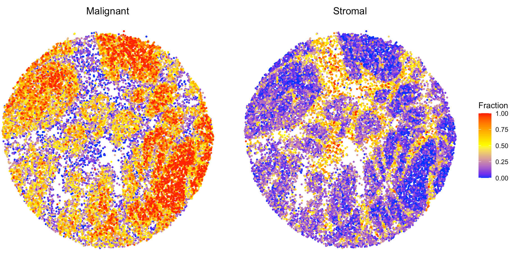
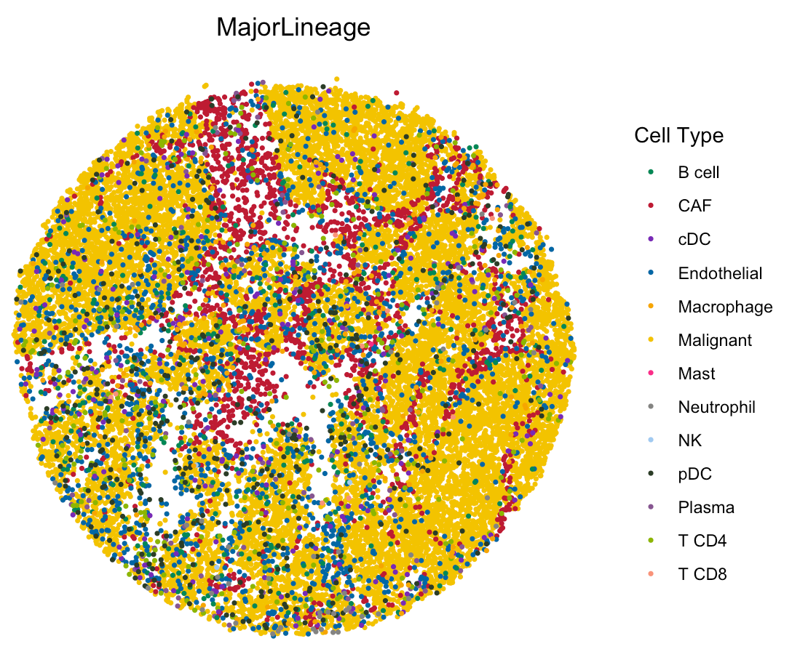

Application to high resolution spatial transcriptomics data
Source:vignettes/hiresST_CRC.Rmd
hiresST_CRC.RmdThis tutorial demonstrates how to apply SpaCET to a colorectal cancer Slide-seq dataset from Zhao et al, 2021. Each bead is 10 µm in diameter covering 1-2 cells. Before running the tutorial, make sure that the SpaCET package and its dependencies have been installed.
Create SpaCET object
User need create.SpaCET.object to create a SpaCET object
by preparing four types of input data referring to a tumor ST
sample.
- spatial transcriptomics count data. The spatial transcriptomics count data must be in the format of matrix with gene name (row) x spot ID (column).
- spatial location information. The spot coordinates should be in the format of matrix with spot ID (row) x coordinates (column). This 1st and 2nd columns represent X and Y coordinates, respectively.
- path to the H&E image file. The image path can be NA if unavailable.
- platform.
library(SpaCET)
hiresST_Path <- system.file("extdata", 'hiresST_CRC', package = 'SpaCET')
# load count matrix
load(paste0(hiresST_Path,"/counts.rda"))
# show count matrix
counts[1:6,1:5]
## 6 x 5 sparse Matrix of class "dgCMatrix"
## b1 b2 b3 b4 b5
## A1BG . . . . .
## A1CF . 1 2 1 1
## A2M . . . . .
## A2ML1 . . . . .
## A3GALT2 . . . . .
## A4GALT . . . . .
# load count matrix
load(paste0(hiresST_Path,"/spotCoordinates.rda"))
# show count matrix
head(spotCoordinates)
## coordinate_x_um coordinate_y_um
## b1 2364.115 3072.225
## b2 3484.520 1734.005
## b3 2279.745 2951.975
## b4 3061.825 1556.490
## b5 2274.220 2982.525
## b6 2986.945 1603.680
# create a SpaCET object.
SpaCET_obj <- create.SpaCET.object(
counts=counts,
spotCoordinates=spotCoordinates,
metaData=NULL,
imagePath=NA,
platform = "SlideSeq"
)
# show this object.
str(SpaCET_obj)Deconvolve ST data
We use the in-house reference to deconvolve this ST sample.
# deconvolve ST data; ~30 minutes
SpaCET_obj <- SpaCET.deconvolution(SpaCET_obj, cancerType="CRC", coreNo=6)
# Since Windows does not support parallel computation, please set coreNo=1 for Windows OS.
# show the ST deconvolution results
SpaCET_obj@results$deconvolution$propMat[1:13,1:3]
## b1 b2 b3
## Malignant 1 1 1
## CAF 0 0 0
## Endothelial 0 0 0
## Plasma 0 0 0
## B cell 0 0 0
## T CD4 0 0 0
## T CD8 0 0 0
## NK 0 0 0
## cDC 0 0 0
## pDC 0 0 0
## Macrophage 0 0 0
## Mast 0 0 0
## Neutrophil 0 0 0
``
## Visualize the cell type proportion
We provide `SpaCET.visualize.spatialFeature` to present the spatial distribution of cell types. `spatialFeatures` could be a vector of cell types. If user would like to visualize multiple cell types in a single panel, you can assign a list to `spatialFeatures`. For example, combine CAF and endothelial cell types into stromal cell.
``` r
# show the spatial distribution of malignant cells and macrophages.
SpaCET.visualize.spatialFeature(
SpaCET_obj,
spatialType = "CellFraction",
spatialFeatures = list(Malignant=c("Malignant"),Stromal=c("CAF","Endothelial")),
sameScaleForFraction = TRUE,
pointSize = 0.6
)
User can check the most abundant cell type in each bead by setting
spatialType as “MostAbundantCellType”.
spatialFeatures could be “MajorLineage” or
“SubLineage”.
# load the color for cell types
load(paste0(hiresST_Path,"/colors_vector.rda"))
# show colors
head(colors_vector,3)
## Malignant CAF Endothelial
## "#f3c300" "#be0032" "#0067a5"
# show the spatial distribution of all cell types.
SpaCET.visualize.spatialFeature(
SpaCET_obj,
spatialType = "MostAbundantCellType",
spatialFeatures = "MajorLineage",
colors = colors_vector,
pointSize = 0.6
)